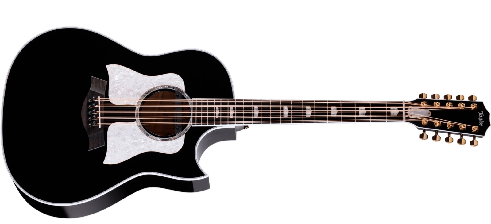
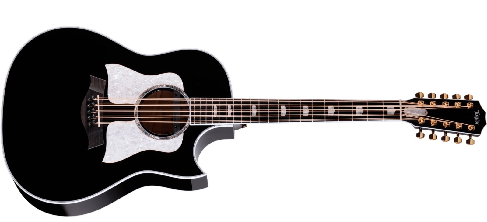

¿Qué es un bajoquinto?
El bajoquinto es un instrumento musical de cuerda, similar al bajo pero con cinco cuerdas. Es muy utilizado en géneros como el norteño y el folclore latinoamericano.
El bajoquinto es un instrumento musical de cuerda, similar al bajo pero con cinco cuerdas. Es muy utilizado en géneros como el norteño y el folclore latinoamericano.
